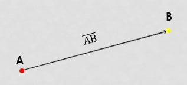
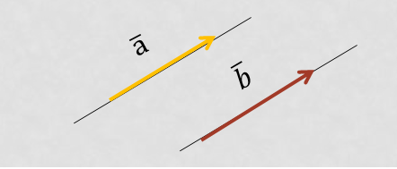
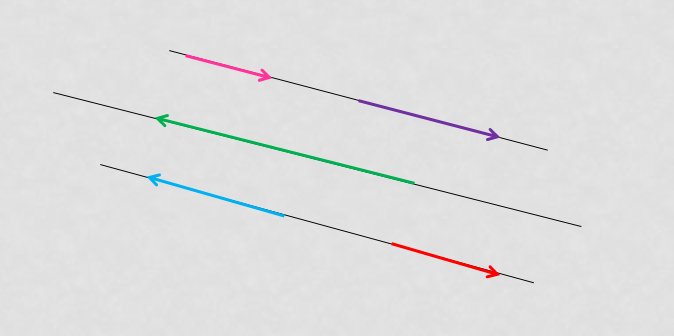
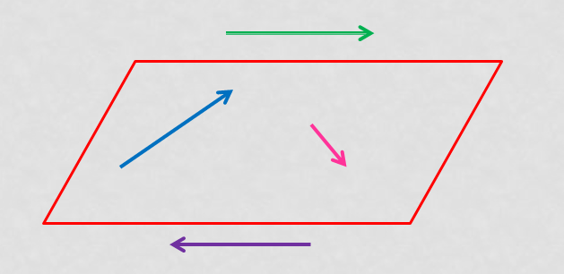
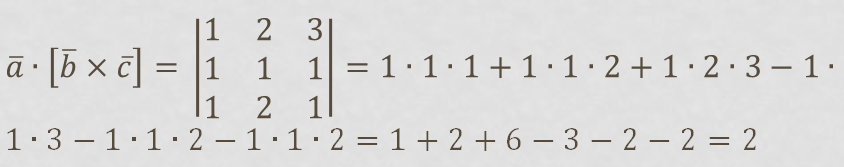

Вектори
Вектор: означення та основне поняття.
Вектор - це напрямлений відрізок, тобто відрізок, який має довжину і певний напрямок. Графічно вектори зображуються у вигляді напрямлених відрізків прямої певної довжини. 
Модуль вектора. Довжина вектора.
Довжина напрямленого відрізку визначає числове значення вектора і називається довжиною вектора або модулем вектора . Для позначення довжини вектора використовують дві вертикальні лінії зліва та справа |(АВ) |.
Рівність вектора.
Вектори a і b називаються рівними , якщо вони мають однакову довжину,
лежать на паралельних прямих або на одній прямій, і напрямлені в один бік.
Тобто якщо, два вектора рівні, якщо вони колінеарні,
співнаправлені і мають рівні довжини:
𝑎 ̅=𝑏 ̅, якщо 𝑎↑↑𝑏 і|𝑎 ̅ |=|𝑏 ̅ |
Вектори рівні , якщо їх координати рівні.

Приклад до рівнясть вектора.
Приклад:
Визначити які з векторів рівні
a={1;2},b={1;2},c={3;2}.
Розв'язок:
𝑎 ̅ = 𝑏 ̅ - так як їх координати рівні,
𝑎 ̅ ≠ 𝑐 ̅ - так як їх координати не рівні,
𝑏 ̅ ≠ 𝑐 ̅ - так як їх координати не рівні
Відповідь: 𝑎 ̅=𝑏 ̅ їх координати рівні.
Завдання і вправи для самостійного розв’язання
Ортогинальні вектори.
Два вектори 𝑎 ̅ i 𝑏 ̅ ортогональні (перпендикулярні)
Приклад до ортогинальні вектори.
Приклад
Довести що вектори a = {1; 2} і b = {2; -1} ортогональні.
Розв'язок:
Знайдемо скалярний добуток цих векторів:
𝑎 ̅∙𝑏 ̅ = 1 · 2 + 2 · (-1) = 2 - 2 = 0
Відповідь:
так як скалярний добуток дорівнює нулю, то вектори a і b ортогональні.
Завдання і вправи для самостійного розв’язання
Колінеарні вектори.
Вектори, що паралельні одній прямій або лежать на одній прямій називаються колінеарними векторами 
Компленарні вектори.
Вектори, які паралельні одній площині або лежать на одній площині називаються компланарними векторами . 
Умови компленарності векторів.
Для 3-х векторів.Три векторі компланарні, якщо їх
мішаний добуток
дорівнює нулю.
Для 3-х векторів. Три векторі компланарні,якщо вони лінійно залежні.
Для n векторів.Векторі компланарні, якщо серед них не більш ніж два лінійно незалежних векторів.
Приклад до Компленарні вектори.
Приклад 1. Перевірити чи компланарні три вектора a ={1;2;3}, b ={1;1;1}, c ={1;2;1}.
Розв'язок:
Знайдемо мішаний добуток цих векторів.

Відповідь: вектори не компланарні так, як їх мішаний добуток не дорівнює нулю.
Завдання і вправи для самостійного розв’язання
Множення вектора на число.
Добуток ненульового вектора на число - це вектор, колінеарний заданому, а його модуль дорівнює модулю заданого вектора, помноженому на модуль числа.
Добуток ненульового вектора на число - це вектор, координати якого дорівнюють відповідним координатам даного вектора, помноженим на число.
Властивості добутку вектора на число
Якщо вектор b дорівнює добутку ненульового числа k і ненульового вектора 𝑎 ̅, тобто 𝑏 ̅=𝑘∙𝑎 ̅, тоді:
𝑏 ̅||𝑎 ̅ - вектори а ̅ і 𝑏 ̅ паралельні
𝑎 ̅↑↑𝑏 ̅, якщо k>0- вектори 𝑎 ̅ 𝑖( 𝑏) ̅ співнаправлені, якщо k>0
𝑎 ̅↑↓𝑏 ̅, якщо k0- вектори 𝑎 ̅ 𝑖( 𝑏) ̅ протилежно напрявлені, якщо число k0
|𝑏 ̅ |=|𝑘|∙|𝑎 ̅ |- модуль вектора 𝑏 ̅ дорівнює модулю вектора( а) ̅ помноженому на модуль k.
Приклад 1. Множення вектора на число для плоских задач
1.1. Знайти добуток вектора a = {1; 2} на 3.
Розв'язок: 3 · a = {3 · 1; 3 · 2} = {3; 6}.
Завдання і вправи для самостійного розв’язання
Контрольні питання для перевірки засвоєного матеріалу.
Що таке вектор? a ̅={1;2;0} i b ̅={1;3;5} i c ̅={2;6;4} a ̅={1;9} i b ̅={−9;1}
Ортогинальні вектори це?
Коли вектори рівні між собою?
Які вектори називаються колінеарними?
Які ви знаєте умови компленарності векторів?
В чому полягає різниця між колінеарними і компленарними векторами?
Чи може модуль вектора бути відємним?
Перевірити чи компланарні три вектора.
Довести що вектори a ̅ i b ̅ ортогональні, тоді коли:
Знайти добуток вектора 𝑎 ̅={9;25;125;1023} на 0.
Використана література.
https://ua.onlinemschool.com/math/library/vector/
https://naurok.com.ua/geometriya-9-klas-prezentaciya-vektori-na-ploschini-184973.html
https://miyklas.com.ua/p/geometria/9/vektori-na-ploshchini-15442